Everything you can do,
from the command line, the terminal menus and the browser.
AImixE collects language resources for one language at a time: it finds them in catalogues and on the web, on your own disk, or takes the files you give it. Every file is hashed, classified, stored unchanged and indexed with where it came from. This guide walks through every screen, key and command.
Every command and flag, for scripts and one-off runs. Go →
The menus you get when you just type aimixe collect. Go →
The same tool in your browser, screen by screen. Go →
Scoring, storage, configuration, engines, troubleshooting. Go →
What the tool does
You name a language (a name or an ISO 639-3 code). The tool builds a language profile for it: names, family, scripts, region, varieties, speakers, known resources. The profile is what every search is built from, so the fuller it is, the better the results.
Then you collect, in any of three ways:
- Online. Catalogue Search asks archives and repositories (Glottolog, Zenodo, Internet Archive, Kaipuleohone, and lookup links for OLAC, ELAR, PARADISEC, Pangloss). Agent Search plans web queries from the profile, reads the pages it finds, follows links to files and learns new names as it goes.
- Offline. Scan folders on this machine for files whose names or contents mention the language.
- Import. Hand it a file or a folder you already have.
Whatever the source, every file goes through the same pipeline: SHA-256 hash, duplicate check, format detection, resource-type classification, relevance scoring, text extraction, and storage under ~/.aimixe with a provenance record. Nothing is ever modified or deleted.
Anything uncertain lands in the review queue: resources that scored in the middle band, and language facts the catalogues or the agent proposed. Nothing reaches the profile or the confirmed collection until you accept it.
Install
Python 3.11 or newer. No third-party packages are needed, ever.
Linux and macOS, without installing
cd collect
./bin/aimixe collectAny operating system, with pip
cd collect
pip install .
aimixe collect # now works from any folder, in any shell (PowerShell, cmd, bash, zsh)Windows without Python
Unzip the portable bundle (aimixe-collect-windows-<version>.zip from the releases page, or built with python3 tools/build_windows_bundle.py). It contains Python itself, so nothing is installed. In the unzipped folder:
| File | What it does |
|---|---|
aimixe-ui.cmd | Double-click: opens the web interface in your browser. |
user-guide.cmd | Double-click: opens this guide. |
aimixe.cmd | The command line. Open a terminal in the folder and run aimixe collect. |
If Python is missing and you would rather install it: Linux sudo apt install python3; macOS type python3 in Terminal and accept the prompt, or brew install python; Windows use the python.org installer and tick "Add python.exe to PATH". Optional on any OS: pdftotext (poppler) gives better text from PDFs and is used automatically when present.
Everything the tool stores goes to ~/.aimixe/ (Windows: C:\Users\you\.aimixe\). Change it with --home DIR or the AIMIXE_HOME environment variable. See Where things are stored.
Your first five minutes
- Run
aimixe collect. You see the welcome text and are asked for a language. - Type a name or a code, for example
Tangsaornst. The tool shows what it found (name, code, alternative names, region, family) and asks Continue with this language? Press Enter. - The profile summary appears: what is already known from the bundled tables and what is missing. Answer
yto fill in fields now, ornto skip. Every question can be left blank. - The Data Collection menu appears. Type
1for Online Collection, then1again for Catalogue Search. Press Enter to search all catalogues, look at the scored results, set a minimum relevance and confirm the download. - When the session summary shows "Pending review" above zero, press
buntil you reach the home screen and typerto go through the queue: A accept, R reject, V view the source, S skip, B back.
Prefer a browser? Type w on the home screen, or run aimixe collect ui. Part 3 covers every screen.
Three ways to use it
| Way | Start it with | Best for |
|---|---|---|
| Command line | aimixe collect nst --catalogue --yes | Scripts, repeated runs, remote machines over SSH, one-off actions such as import or history --json. |
| Terminal interface | aimixe collect | Working through a language step by step in a terminal. Numbered menus, b for back, ? for help. |
| Web interface | aimixe collect ui or w in the terminal | The same services with a visual profile, tables, progress bars and a two-pane review queue. Local only: it listens on 127.0.0.1. |
All three read and write the same data. You can search in the browser, review in the terminal and script an import, and every session shows up in the same history.
Part 1 · Command line: overview and conventions
The program is aimixe collect. On Linux and macOS without installing, write ./bin/aimixe collect; in the Windows bundle, aimixe.cmd collect. The examples below use the short form.
$ aimixe collect --help
usage: aimixe collect [-h] [--version] [--no-color] [--online] [--offline]
[--catalogue] [--agent] [--scan PATH] [--import PATH]
[--profile] [--mode {copy,move,reference}] [--yes]
[--home DIR]
[language]
examples:
aimixe collect interactive: name a language, build its profile, collect
aimixe collect nst start with a language (name, ISO 639-3 code or alias)
aimixe collect nst --catalogue search catalogues, then download what scores high enough
aimixe collect nst --agent web search planned from the profile (rule-based or a model CLI)
aimixe collect nst --scan ~/Docs offline: find files on this machine about the language
aimixe collect import grammar.pdf add a file or folder (copy | move | reference)
aimixe collect review accept or reject uncertain resources and proposed facts
aimixe collect history past collection sessions
aimixe collect catalogue list catalogue providers (add | remove)
aimixe collect search list web search engines for Agent Search (use | add | remove | test)
aimixe collect ui the same, in your browser
aimixe collect guide the user guide, in your browser
in any menu: number or text to choose, b = back, q = quit, ? = help.
Two flags are accepted by every command:
| Flag | Meaning |
|---|---|
--home DIR | Use DIR instead of ~/.aimixe. Handy for a second, separate collection or for tests. |
--no-color | Plain output without colours. The NO_COLOR environment variable does the same. |
Anywhere the tool asks a question, ? prints help for that question, q quits, and in menus b goes back. When output is piped or not a terminal, colours are switched off automatically.
aimixe collect <language> [options]
With a language and no other option, this opens the profile step and then the Data Collection menu for that language (see Part 2). The options below run one action directly and then return to the shell.
| Option | Does |
|---|---|
--profile | Opens the Language Profile menu (complete, review, edit, propose values). |
--catalogue | Catalogue Search. Asks which catalogues and the minimum relevance unless --yes is given. |
--agent | Agent Search. Shows the planned queries and asks to run them unless --yes is given. |
--online | The Online Collection sub-menu (choose between the two above). |
--scan PATH | Offline scan of PATH. Repeat the flag for several folders. Uses --mode or the configured storage mode and the configured content setting, without asking. |
--offline | Offline Collection, asking for the folders interactively. |
--import PATH | Import a file or folder into this language. |
--mode copy|move|reference | Storage mode for --scan and --import: copy leaves the original in place (default), move relocates it, reference only records where it is. |
--yes, -y | Accept the detected language without asking and skip the confirmation questions of --catalogue and --agent. What you want in scripts. |
Options combine and run in this order: profile, scan, offline, import, catalogue, agent, online.
# non-interactive catalogue search for Nocte, then an offline scan of two folders, referenced in place
aimixe collect njb --catalogue --yes
aimixe collect njb --scan ~/fieldwork --scan /media/usb/recordings --mode referenceIf the name is ambiguous (several languages match), the candidates are listed and you pick one; with --yes the best candidate is taken when its score is high enough. If nothing matches, you are offered to create a profile with a local identifier.
aimixe collect import <path>
$ aimixe collect import --help
usage: aimixe collect import [-h] [--home DIR] [--no-color] [--language LANGUAGE]
[--mode {copy,move,reference}] [--yes] path
| Option | Does |
|---|---|
path | A file or a folder. Folders are walked recursively; every file is imported. |
--language, -l | Which language. If omitted, the home screen asks. |
--mode | copy, move or reference (see above). |
Every file is hashed, checked against everything already stored (a byte-identical file is linked as a duplicate and not stored twice), typed, classified, scored and stored with its original path recorded. The command prints one line per file and the session summary. Exit code 10 when any file failed.
$ aimixe collect import ~/Documents/tangsa/grammar.pdf -l nst Importing /home/you/Documents/tangsa/grammar.pdf (copy) … stored 100 grammar.pdf [grammar] Collection Session: COL-20260911-002 Language: Tangsa [nst] Mode: Import Discovered: 1 Relevant: 1 Downloaded: 1 Duplicates: 0 Failed: 0 Pending review: 0 took 0s · 1.2 MB stored
aimixe collect review [--language ID]
Opens the review queue. With several languages waiting and no --language, the picker asks which queue to open (a number, a for all, b back). The screen itself is described in Part 2.
aimixe collect history [session-id] · resume
$ aimixe collect history
session language mode status started disc rel down dup fail review
---------------- ------------ ------------------ -------- ---------------- ---- --- ---- --- ---- ------
COL-20260911-001 Tangsa [nst] Offline Collection finished 2026-09-11 15:49 2 2 2 0 0 0
COL-20260911-002 Tangsa [nst] Import finished 2026-09-11 15:49 1 1 1 0 0 0
COL-20260911-003 Tangsa [nst] Offline Collection finished 2026-09-11 15:49 1 1 1 0 0 1
| Form | Does |
|---|---|
history | Every session, newest first. Columns: discovered, relevant, downloaded (stored), duplicates, failed, sent to review. |
history --language nst | Only that language. |
history --json | The same as JSON, for scripts. |
history COL-20260911-003 | One session's summary followed by its full event log (timestamp, level, message). |
resume COL-20260911-003 | Re-runs an interrupted or failed Offline Collection or Import session with the same parameters. Files already stored are linked as duplicates, so nothing is stored twice. Other modes and finished sessions are not resumable (exit code 20). |
aimixe collect search — the web search engines Agent Search uses
$ aimixe collect search list
name kind state region what
---------- ---- ------------------ --------------------------------------- ----------------------------------------------
duckduckgo html enabled global (blocked in some countries) DuckDuckGo HTML endpoint; no key; sometimes answers with a bot check
bing rss enabled global (works in China) Bing RSS feed; no key; few results per query
wikipedia json enabled global (blocked in some countries) Wikipedia article search; reliable; set lang to zh, ru, hi … for other editions
baidu html China unverified · Baidu result page (China). Best effort …
brave json needs key global unverified · Brave Search API; free tier with a key …
google_cse json needs key global (blocked in China) unverified · Google Programmable Search JSON API …
searxng json wherever your instance is; self-hostable unverified · SearXNG meta-search (JSON) …
serpapi json needs key global unverified · SerpAPI (Google, Baidu, Yandex … via one key) …
sogou html China unverified · Sogou result page (China) …
yandex_xml rss needs key Russia and neighbours unverified · Yandex XML search API …
| Command | Does |
|---|---|
search list | Every engine: enabled or not, whether it needs a key, region, and whether it has been verified from the build machine. |
search use bing searxng | Sets which engines are asked, in this order. With no names, an interactive picker (numbers in order, e.g. 3 1 2). |
search test baidu "Zhuang language" | Runs one query against one engine and prints the hits, so you can see what works from where you are. Exit code 10 when it returns nothing. |
search add | Guided questions to add your own engine (name, kind json/rss/html, URL template with {q}, key, result paths). Saved to ~/.aimixe/search-engines/<name>.toml. |
search add --file my.toml | The same from a TOML file (one engine, or a list under [[engine]]). |
search remove NAME | Removes an added engine, or unselects a built-in one. |
Keys for engines that need one go under [agent.search_keys] in config.toml or in the environment as AIMIXE_SEARCH_KEY_<NAME>. Details and the China-specific advice are in the reference.
aimixe collect catalogue — catalogue providers
$ aimixe collect catalogue list
name kind enabled source what
---------------- ------ ------- -------- ------------------------------------------------------------
glottolog record yes built-in the reference catalogue of the world's languages: classifica
zenodo record yes built-in open research repository: papers, datasets, recordings
internet_archive record yes built-in Internet Archive items: books, recordings, films, datasets
kaipuleohone record yes built-in Kaipuleohone (University of Hawaiʻi digital language archive
olac lookup yes built-in Open Language Archives index — what participating archives h
elar lookup yes built-in Endangered Languages Archive deposits (site search; deposits
paradisec lookup yes built-in PARADISEC catalogue (blocks automated clients; open in a bro
pangloss lookup yes built-in Pangloss Collection (LACITO/CNRS) — browse the language list
| Command | Does |
|---|---|
catalogue list | Providers with kind (record providers answer with results the tool can score and download; lookup providers only give you a URL to open), enabled state and source. |
catalogue add | Guided: name, kind (lookup, api_json, html_links), URL template with {q} {name} {code}, search by name or code, description, licence note, and for JSON APIs the dotted paths to the result list and fields. Saved to ~/.aimixe/catalogues/<name>.toml. |
catalogue add --file x.toml | The same from a file. |
catalogue remove NAME | Removes a custom catalogue or disables a built-in one (listed under disabled_catalogues in config). |
aimixe collect ui · aimixe collect guide
| Command | Does |
|---|---|
ui | Starts the local web interface and opens it in your browser. Prints the address; Ctrl-C stops it. |
ui --port 9000 | Another port (default 8765). Exit code 50 if the port is taken. |
ui --host 0.0.0.0 | Listen on all interfaces. There is no login, so only do this on a trusted network; for a remote machine prefer SSH port forwarding: ssh -L 8765:127.0.0.1:8765 host. |
ui --no-browser | Do not open a browser tab; just print the address. |
guide | Opens this guide in your browser. |
guide --path | Only prints where the guide file is. |
Environment variables and exit codes
| Variable | Meaning |
|---|---|
AIMIXE_HOME | Data directory instead of ~/.aimixe (the --home flag wins over it). |
AIMIXE_SEARCH_KEY_<NAME> | API key for a search engine, e.g. AIMIXE_SEARCH_KEY_BRAVE, AIMIXE_SEARCH_KEY_GOOGLE_CSE. |
NO_COLOR | Plain output. |
PYTHONUTF8=1 | Set by the Windows launcher so names in any script print correctly. |
| Exit code | Meaning |
|---|---|
| 0 | Success. |
| 10 | The tool's own check failed (an import had failures; an engine test returned nothing). |
| 20 | Not evaluable: the session cannot be resumed, or the feature is not in this build. |
| 40 | Invalid input: unknown language, missing path, bad TOML. |
| 50 | Configuration: the web port is in use. |
| 70 | Internal error. |
Part 2 · Terminal interface: keys that work everywhere
Run aimixe collect with no arguments. Every screen is a list of numbered or lettered choices and a prompt line starting with >.
off for Offline Collection.
EnterTakes the default: the item marked ›, which is the last choice you made in that menu, or the value shown in brackets.
bBack to the previous screen. In a menu, it picks the Back or Exit item.
qQuit the program from anywhere. Running collections finish or are recorded as interrupted; nothing half-written is left behind.
?Help for the current question.
blankIn the profile questions, leaves a field unanswered. Every field can be skipped.
Home screen
The first screen lists every language you have entered, with its state and a suggested next step, then the actions.
AImixE — Data Collection v0.1.0 ──────────────────────────────────────────────────────────────────────────────────── 1 Tangsa nst 4 resource(s) 2 to review last: today 15:49 · Offline Collection → go through what is waiting (2 item(s) in the review queue) n new language (name or ISO 639-3 code) r review everything waiting (2 item(s)) h collection history w web interface (opens in your browser; the terminal stays usable) g user guide (opens in your browser) s settings: agent, search engines, catalogues q leave Choose a number or a letter: >
| Key | Does |
|---|---|
| a number | Opens that language: profile step, then the Data Collection menu. |
n | Asks for a new language name or code. Typing a name or code directly at this prompt does the same. |
r | The review picker: choose which language's queue to go through, or all. |
h | Collection history for all languages. |
w | Starts the web interface in the background and opens it in your browser. The terminal stays usable; the server stops when you leave with q. See below. |
g | Opens this guide in your browser. |
s | Settings: agent provider, search engines, catalogues. |
q | Leave. |
The tags after each language: local id when the language has no ISO code, the resource count, n to review, and when it was last collected and how. The suggested step changes with the state: start collecting, go through the queue, complete the profile, or collect more.
Naming a language
Type a language name, an ISO 639-3 code, an alternative name or a dialect name. Your own registry is searched first, then the bundled ISO 639-3 and Glottolog tables. Three things can happen.
Exact match
Enter language name or ISO 639-3 code: > Tangsa Language detected Name: Tangsa ISO 639-3: nst Alternative names: Tase Naga, Pangwa Naga, Naga, Tase, Cham Chang, Chang, Jugli Region: India / Myanmar Family: Sino-Tibetan Matched on: alternate name “Tangsa” Continue with this language? [Y/n] > y Profile created for Tangsa [nst].
Answer n to search again; if other candidates exist you are offered them. "Source: local language registry" means you have opened this language before and its profile is already stored.
Several matches
A numbered list of candidates with code, region and what matched ("matched alternate name …"). Pick one, or "None of these".
No match
No language found for “Kimsa” in the local registry or the bundled ISO 639-3 / Glottolog tables.
Language identification
1. Search again with a different name or code
2. Create a new language profile with this name
3. Exit
Choosing 2 asks for the name to record and, if you know it, an ISO 639-3 code. Without a valid code the language gets a local identifier (x-kimsa) and is tagged local id everywhere.
Language profile
After the language is chosen, the profile summary shows what the bundled tables already know and what is missing, section by section.
Language profile found. Known: ✓ Names and classification Family · Alternative names · Scripts ✓ Location and varieties Varieties · Region ✓ Resources Linguistic studies ? Community Transmission (uncertain — will be asked again) Missing or uncertain: – Names and classification Exonyms · Parent language/group · Notes – Location and varieties Orthography status · Literacy · Places · Other languages – Resources Resource summary · Written materials · Recordings · Digital resources · Speaker estimate – Community Speaker estimate basis · Age spread · Domains of use · Displacement · Community information – Translation and publication Translations · Publications 7 known · 20 to fill. Every field can be skipped; answers are saved as you go. Complete missing profile information? [Y/n] >
y asks the missing fields one at a time, grouped by section, with a progress list at the top of each group. Blank skips a field. n continues with what is known. Choosing Language Profile from the Data Collection menu, or --profile on the command line, opens the full menu:
Language Profile 1. Complete missing information → 20 field(s) missing or uncertain, asked group by group; blank skips a field 2. Review existing profile → every field with its value and where each value came from 3. Edit profile → change any field, one section or all of them 4. Skip and continue collection 5. Ask catalogues and the agent to propose values → Glottolog plus a short read of pages about the language; nothing downloaded; you accept or reject each fact
| Item | Does |
|---|---|
| 1 Complete missing information | Asks every missing or uncertain field. Answers are saved as you go, so you can stop at any time. |
| 2 Review existing profile | Prints every field with its value and its provenance: source (bundled tables, you, a catalogue, the agent), confidence, year, note. Values from different sources are kept side by side; nothing is overwritten. |
| 3 Edit profile | Pick a section (or all fields) and answer each field again. A new answer is stored as a new value from source user and becomes the preferred one. |
| 4 Skip and continue | To the Data Collection menu. |
| 5 Propose values | Asks Glottolog for classification and dialect names and lets the agent read a few pages about the language. Every fact found goes to the review queue with its source and a quote; nothing is written to the profile until you accept it. At the end you are offered to review the proposals right away. |
How each kind of field is asked (numbers, ranges, states, places, lists) is in the profile reference.
Data Collection menu
Tangsa [nst] 4 resource(s) b = back · q = quit · ? = help Data Collection Language: Tangsa [nst] 1. Online Collection → catalogues and archives, or an agent searching the web 2. Offline Collection → scan folders on this machine for files about the language 3. Import Files / Folder → add a file or folder you already have 4. View Existing Collection → 4 resource(s) stored · 2 waiting in the review queue 5. Language Profile → complete, review or edit the language profile 6. Web Interface → this language in your browser 7. User Guide → the guide, in your browser 8. Exit → back to the list of languages
Online Collection opens a sub-menu with Catalogue Search and Agent Search. Each action returns here when it finishes; Exit or b returns to the home screen.
Catalogue Search
Asks every enabled catalogue with the whole profile: ISO code, name, alternative names, varieties, known publications. The screen first lists the providers and whether each can search for this language (a provider that searches by code is skipped for a language with a local identifier).
Catalogue Search · Yongnan Zhuang [zyn] glottolog record the reference catalogue of the world's languages … zenodo record open research repository: papers, datasets, recordings internet_archive record Internet Archive items: books, recordings, films, datasets kaipuleohone record Kaipuleohone (University of Hawaiʻi digital language archive) olac lookup Open Language Archives index … elar lookup Endangered Languages Archive deposits … paradisec lookup PARADISEC catalogue … pangloss lookup Pangloss Collection … Search all enabled catalogues? [Y/n] > y Searching … glottolog: 1 result(s) zenodo: 38 result(s) internet_archive: 7 result(s) kaipuleohone: 0 result(s) search took 15 s score band catalogue title files ----- -------------- ---------------- -------------------------------------------------------- ----- 100 Very high glottolog Glottolog languoid: Yongnan Zhuang [yong1275] 1 59 Possible match zenodo Ways of Singing in Napo County (Guangxi Zhuang Autonomo… 2 55 Possible match zenodo Linguistic Map of “Breast” in Zhuang and Its Interpretat… 1 4 Unrelated zenodo Isopsestis poculiformis Zhuang, Owada & Wang 2015 1 Places to open in a browser (no machine-readable search): olac https://search.language-archives.org/search.html?q=zyn elar https://www.elararchive.org/?s=Yongnan+Zhuang paradisec https://catalog.paradisec.org.au/languages/zyn pangloss https://pangloss.cnrs.fr/languages 5 result(s) at or above 30: 1 confirmed, 4 would go to the review queue; 3 below the default minimum of 50. Minimum relevance to download and store [50]: > 30 Download and store now? [Y/n] > y
Answering n to "Search all" lets you type the catalogue names to use, comma separated. Every result is scored (how) and shown with its band. Then you set the minimum relevance: results at or above it are downloaded; among those, scores of 70 and above are confirmed, 30 to 69 go to the review queue. Results below the minimum are recorded in the session but not downloaded.
During the download a progress board shows each file with its size, speed and time left, plus one line per stored, duplicate, review or failed item. At the end: the session summary, how many language facts the catalogues proposed for review (Glottolog's classification and dialect names, for instance), and where the lookup links were saved as a manifest.
Agent Search
The agent turns the profile into web queries, reads the pages, follows links to downloadable files and repositories (Zenodo, Internet Archive, GitHub), scores everything before downloading, and proposes what it learns.
Agent Search · Yongnan Zhuang [zyn] Agent provider: claude Use a different agent provider? [y/N] > Web search engines: duckduckgo, bing, wikipedia Change the search engines? [y/N] > Planning queries from the language profile … 1. [name] "Yongnan Zhuang" language 2. [name] "Yongnan Zhuang" dictionary 3. [name] "Yongnan Zhuang" grammar 4. [code] ISO 639-3 zyn 5. [alternate_name] "Bou Rau" language ← alternative name from the profile … Add your own queries (separate with ';'), or blank: > Yongnan Zhuang audio recordings; 邕南壮语 Run 18 queries now? [Y/n] > y Limits: 40 pages, depth 2, 6 per host, 40 files, 2 rounds. New names found during the search feed later rounds.
| Question | What it changes |
|---|---|
| Use a different agent provider? | Opens the provider picker (rule-based or a model CLI). With a model provider the profile and the page texts are sent to that tool. |
| Change the search engines? | Opens the engine picker: numbers in the order to ask them. Defaults to yes when no engine is usable. |
| Add your own queries | Anything you type is added with basis user. Use the language's own script if you know it. |
While it runs, the progress board shows the stage (searching, reading pages, downloading), pages read out of the limit, and every download with speed. When it finishes: hits, pages fetched, relevant pages, files found, names learned during the session (they sharpened the second round and were proposed for review, never written to the profile), the number of facts proposed, and any engine errors such as a DuckDuckGo bot-check page.
Learning is guarded. A name is only learned from a page the tool confirmed is about this language, never a name that belongs to another ISO language, and there are caps per session. Everything learned still goes through the review queue.
Offline Collection
Offline Collection · Tangsa [nst] Scanning for 40 term(s) from the language profile, e.g.: Tangsa, nst, Tase Naga, Pangwa Naga, Naga, Tase, Cham Chang, Chang, Jugli Folder(s) to scan (separate several with ';'; default: your home folder): > ~/Documents/fieldwork; /media/usb Storage mode — Copy / Move / Reference [default: copy]: > Also look inside text and document files (slower, finds files whose names say nothing)? [Y/n] > Scanning /home/you/Documents/fieldwork, /media/usb … stored 70 Tangsa_grammar_sketch.txt [grammar] stored 70 Mossang_wordlist.txt [wordlist] review 55 Rangpan_song.wav [audio] Files seen: 812 matches: 3 folders skipped: 4
The search terms come from the profile: name, code, alternative names, exonyms, varieties, places. That is why a fuller profile finds more. A file matches when a term appears in its name, or, with the content option, inside a text-bearing file (plain text, documents, PDFs, annotation formats). Folders such as .git, node_modules and virtual environments are skipped (list in [scan] exclude_dirs).
Storage modes: copy stores a read-only copy and leaves your file alone; move relocates the file into the collection; reference only records where the file is and indexes it there. Every match records how it was detected (file name or content) and with what confidence.
Import Files / Folder
Import Files / Folder · Tangsa [nst] File or folder to import: > ~/Downloads/tangsa-dictionary.pdf Storage mode — Copy / Move / Reference [default: copy]: > Importing /home/you/Downloads/tangsa-dictionary.pdf (copy) … stored 100 tangsa-dictionary.pdf [dictionary]
Imported files are asserted by you, so they score 100 and are confirmed. A file identical to one already stored is linked as a duplicate: one stored copy, two source records. Archives (zip, tar) are listed; their members become resources of their own when [archives] ingest_members = true.
View Existing Collection
Existing Collection · Tangsa [nst] 4 resource(s) # name format category resource type relevance sources - ------------------------- ------ -------- ------------- ------------- ------- 1 Tangsa_grammar_sketch.txt text text grammar 70 confirmed 1 2 Mossang_wordlist.txt text text wordlist 70 confirmed 1 3 recipes.txt text text unknown 100 confirmed 1 4 Rangpan_song.wav audio audio audio 55 review 1 Resource number for details (blank to go back): > 1 #1 Tangsa_grammar_sketch.txt stored at ~/.aimixe/languages/nst/resources/text/453e998e4a2f-Tangsa_grammar_sketch.txt sha256 453e998e4a2f5f92e3d55cda3587e02d01cdc71ab950da87a6390ecb3518332a format text · text · 13 bytes · copy types grammar (0.70, content), grammar (0.70, rule) Sources: session_id=COL-20260911-001; method=offline; original_path=~/Documents/fieldwork/Tangsa_grammar_sketch.txt; detection_method=filename; confidence=0.9; import_method=copy Extracted: text ~/.aimixe/languages/nst/extracted/1-453e998e4a2f/text.txt metadata ~/.aimixe/languages/nst/extracted/1-453e998e4a2f/metadata.json
A resource's detail shows where the read-only original is stored, its hash, format, size and storage mode, the resource types with their confidence and how they were decided (rule, content, catalogue), every source record (a file found twice has two), the derived files under extracted/, and near-duplicates found by fuzzy text comparison.
Review queue
From the home screen, r opens the picker; from the command line, aimixe collect review.
Review queue 1 Yongnan Zhuang zyn 28 waiting 11 resource(s) · 17 language fact(s) 2 Guibei Zhuang zgb 2 waiting 2 resource(s) 3 Bangubangu bnx 2 waiting 2 language fact(s) a all languages (32) b back Which language? > 1
Then one item at a time. Two kinds exist.
item 1 of 28 · Yongnan Zhuang [zyn] Possible new language information detected Field: varieties Value: Yongnan Zhuang of Chongzuo, Yongnan Zhuang of Shangsi, Yongnan Zhuang of Qinzhou, Yongnan Zhuang of Long'an, Yongnan Zhuang proper Quote: “There are five varieties: Yongnan Zhuang of Chongzuo, of Shangsi, of Qinzhou, of Long'an, and Yongnan Zhuang proper.” Confidence: 85% Source: https://en.wikipedia.org/wiki/Yongnan_languages [A] Accept [R] Reject [V] View source [S] Skip [B] Back >
item 2 of 28 · Yongnan Zhuang [zyn] Uncertain resource Resource: The prospects for the long-term survival of non-Han minority languages Relevance: 62 possible - shared name “Zhuang”, weak - region match China Confidence: 62% Source: https://zenodo.org/records/1234567
| Key | Does |
|---|---|
| A Accept | A language fact is written into the profile (added to the existing values; nothing is replaced). A resource becomes confirmed. |
| R Reject | Recorded as rejected. The resource stays stored but is no longer counted for the language; the fact stays in the provenance as rejected so it is not proposed again. |
| V View source | Prints the stored text of the page or file the item came from, so you can judge without opening a browser. |
| S Skip | Leaves it for later and shows the next item. |
| B Back | Returns to the menu; the remaining items stay in the queue. |
History
h on the home screen shows every session in a table (see the command for the columns). Type a session id to print its summary and full event log; blank goes back.
Settings
Settings 1. Agent provider → now: rule_based 2. Search engines → now: duckduckgo, bing, wikipedia 3. Catalogues → 8 enabled: glottolog, zenodo, internet_archive, kaipuleohone, olac, elar, paradisec, pangloss 4. Back
Agent provider
Agent provider
1. ● rule_based no model; queries and facts by rules, never leaves the machine
2. claude Anthropic's Claude Code CLI
3. codex OpenAI Codex CLI
4. gemini Google Gemini CLI (not installed on this machine)
5. agy Antigravity CLI
6. qwen Qwen Code CLI (not installed on this machine)
7. ollama Ollama, local model (prompt on stdin); set the model name to what you have pulled
8. llm Simon Willison's llm CLI, any configured model (not installed on this machine)
9. Keep current
The dot marks the current one. Choosing a tool that is not installed is allowed; the rule-based agent is used until it appears on your PATH. The choice is saved as provider = "…" under [agent] in config.toml.
Search engines
Search engines ● 1. duckduckgo html DuckDuckGo HTML endpoint; no key; sometimes answers with a bot check → region: global (blocked in some countries) ● 2. bing rss Bing RSS feed; no key; few results per query → region: global (works in China) ● 3. wikipedia json Wikipedia article search; reliable; set lang to zh, ru, hi … for other editions 4. baidu html Baidu result page (China). Best effort … (unverified) 5. brave json Brave Search API; free tier with a key … ⚠ needs an API key: put brave = "…" under [agent.search_keys] in config.toml or set AIMIXE_SEARCH_KEY_BRAVE … Enter the numbers to use, in the order to ask them (e.g. 3 1 2). Blank keeps the current choice. Engines: > 2 4 3 Saved: search_backends = ['bing', 'baidu', 'wikipedia'] in ~/.aimixe/config/config.toml
Catalogues
The provider table, then Add a catalogue (the guided questions from catalogue add) or Remove or disable a catalogue by name.
w and g: the browser from the terminal
w on the home screen starts the web interface in a background thread, on port 8765 or the next free one, and opens your browser. The terminal keeps working; pressing w again only reopens the browser. The line on the home screen shows the address while it runs, and it stops when you leave with q.
Choose a number or a letter: > w Web interface started at http://127.0.0.1:8765/ (it stops when you leave with q). Opened http://127.0.0.1:8765/
Inside a language, 6. Web Interface in the Data Collection menu opens that language's profile page directly. g on the home screen and 7. User Guide open this guide. If no browser can be opened (a server over SSH, for instance), the address or file path is printed so you can open it yourself, or forward the port: ssh -L 8765:127.0.0.1:8765 host.
Part 3 · Web interface: starting it
aimixe collect ui # opens http://127.0.0.1:8765/ in your browser; Ctrl-C stops it
aimixe collect ui --port 9000 # another port
aimixe collect ui --no-browser # only print the addressOr press w in the terminal interface, or double-click aimixe-ui.cmd in the Windows bundle. The page talks to a small local server; nothing leaves your machine except the searches you start. There is no login, which is why it listens on 127.0.0.1 only.
The layout is the same on every screen: a sidebar with the language switcher, the Collect actions, the Language pages with live counts, the review badge, History, Settings, the User guide link and the agent and engine status; a search box at the top to find or jump to a language; and the page itself.
Home
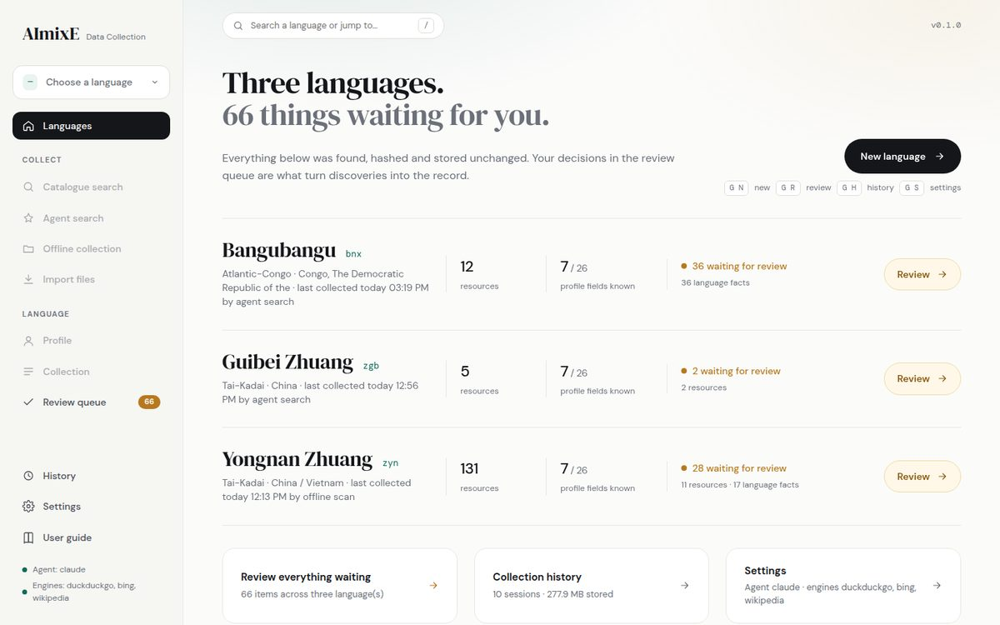
- New language opens the search page. The keys shown next to it work everywhere: G then N new, G R review, G H history, G S settings.
- Click a language name or Open to work on it: the sidebar switches to that language and the profile opens.
- Review opens that language's queue. Start collecting goes straight to the catalogue search for a language with nothing stored yet.
- The three cards at the bottom: the whole review queue, the collection history with session count and storage size, and settings with the current agent and engines.
New language
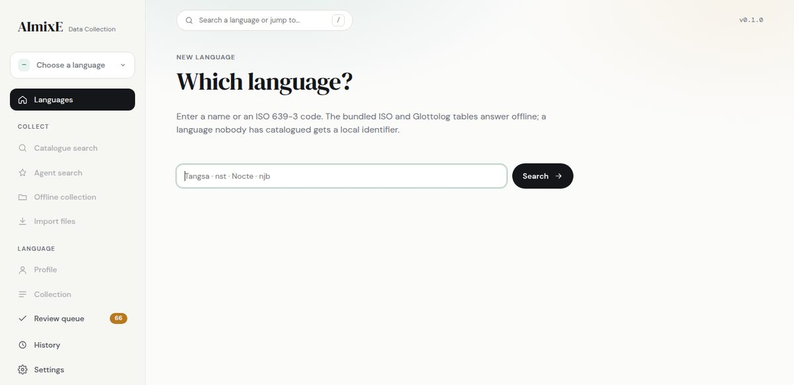
An exact match shows "Language detected" with the family, region, alternative names and what matched, and a Continue with this language button. Several matches are listed to choose from. No match offers to create a profile with a local identifier: type the name and, if known, the code.
Profile
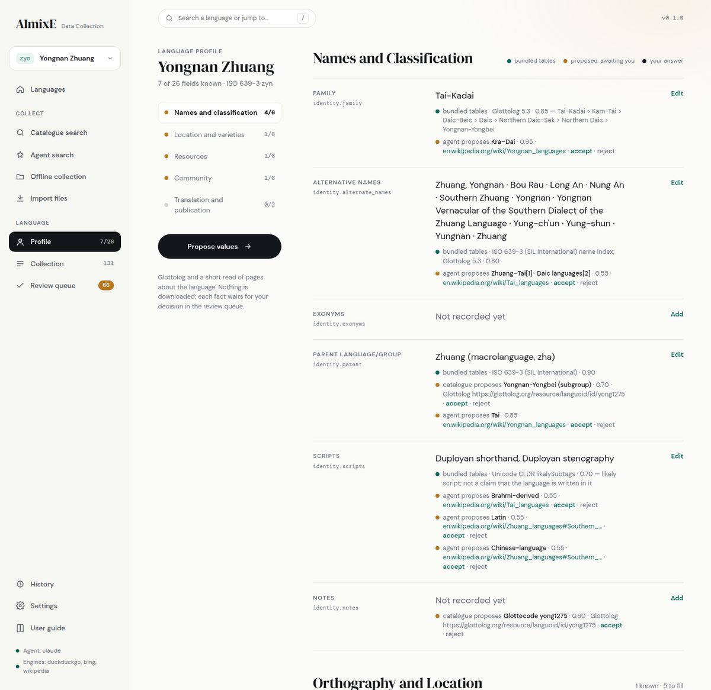
- Each field shows its label, its internal key (
identity.family), the current value, and one provenance line per recorded value: a green dot for the bundled tables and catalogues, a black dot for your own answer, an amber dot for a proposal awaiting you. Each line names the source, the confidence and, when there is one, a link to the page. - A proposal shows accept and reject inline, so you can settle it without leaving the page. Accepting adds the value; nothing is replaced.
- Edit (or Add when the field is empty) opens an editor under the row, with the same input kinds as the terminal: text, a list, a state with detail, a speaker number or range, places one per line, publication entries. Save records it as your answer.
- Propose values runs the same Glottolog and agent read as the terminal, with a live log; when it finds something, the review queue opens.
- The section list on the left scrolls to a section. The counts in the sidebar (Profile 9/26) update as you record values.
Catalogue search
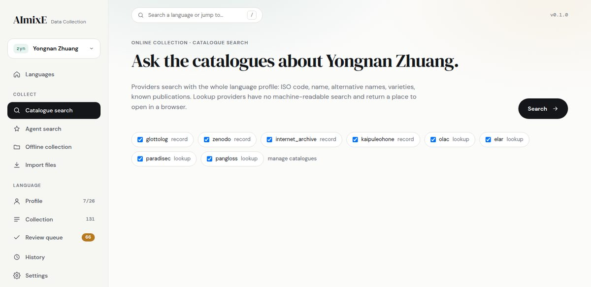
Results appear in a table: a selection mark, the relevance score with a bar, the title (a link to the record), the reasons for the score, the catalogue, the licence and the number of files. Pills above the table filter by band: All, Confirmed (70 and above), For review (30 to 69), Below 30. Results under 30 are folded away behind "Show all".
The dark bar at the bottom holds the minimum relevance. The marks in the first column show which results will be downloaded at that threshold and the bar says how many are confirmed and how many go to review. Download starts the job: every file appears in the log with size, speed and time left, then the session summary and the outcome of each item. Lookup providers appear as chips to open in a new tab.
Agent search
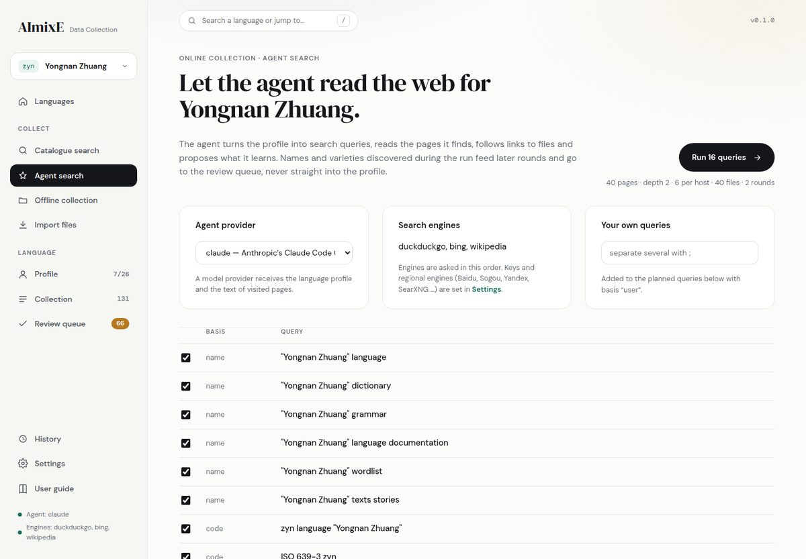
The three panels: the agent provider (changing it here saves to config.toml, as in the terminal), the search engines currently usable with a link to Settings, and a box for your own queries separated by semicolons. The limits from configuration are shown under the Run button. While running, the log shows every page and download; at the end, the counts, the names learned, the facts proposed for review, any engine errors, and the outcome of every resource.
Offline collection and Import
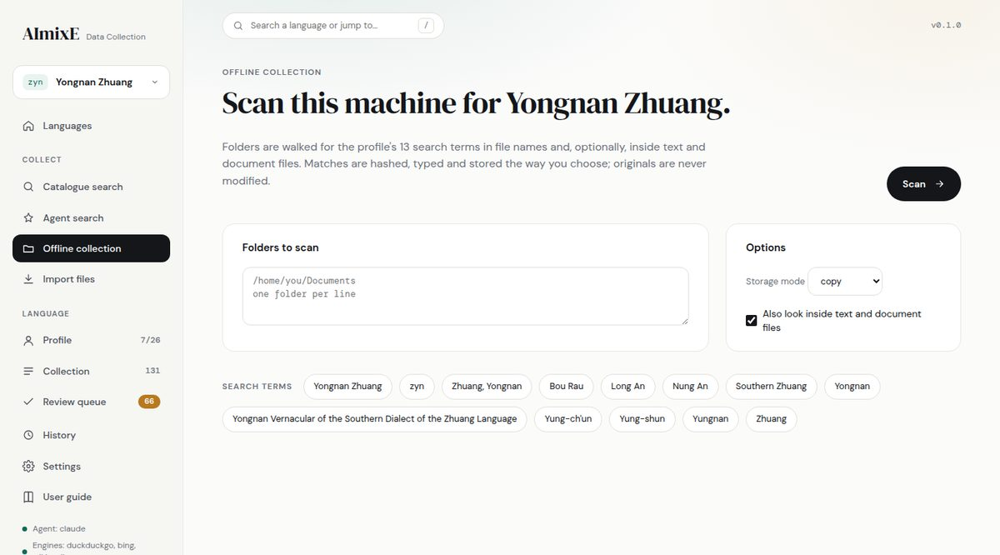
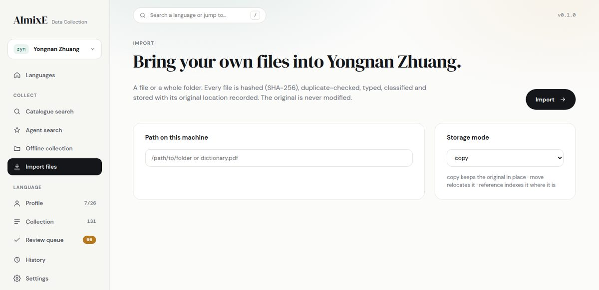
Both run as jobs with a progress line (files seen and matches for a scan, files done for an import), then the session summary and the outcome table. Clicking a stored outcome opens the resource in the Collection page.
Collection
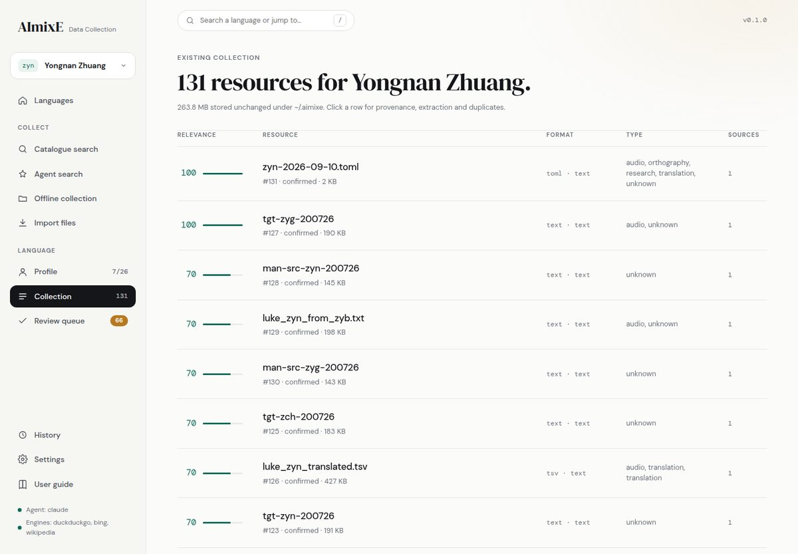
Clicking a row opens the resource detail below the table: stored path, SHA-256, format, types with confidence, relevance per language with the reasons, every provenance record, extracted files, near-duplicates and the metadata found in the file.
Review queue
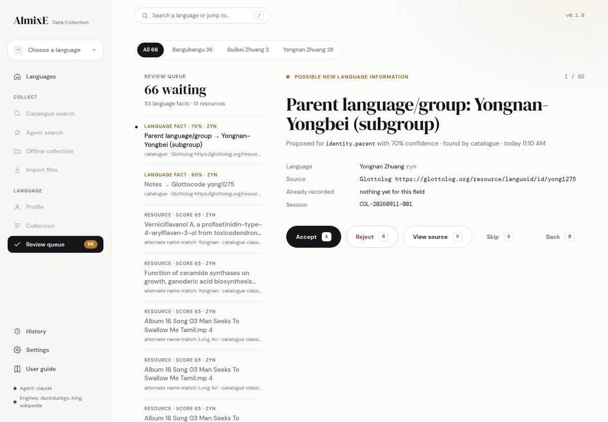
The right pane shows, for a language fact, the proposed values as chips, the supporting quote, the source link, what is already recorded for that field and the session that found it. For an uncertain resource it shows the score, the reasons, the source and a link to the resource. The buttons and keys are the same as the terminal:
After a decision the next item is selected automatically. The sidebar badge and the home counts update.
History
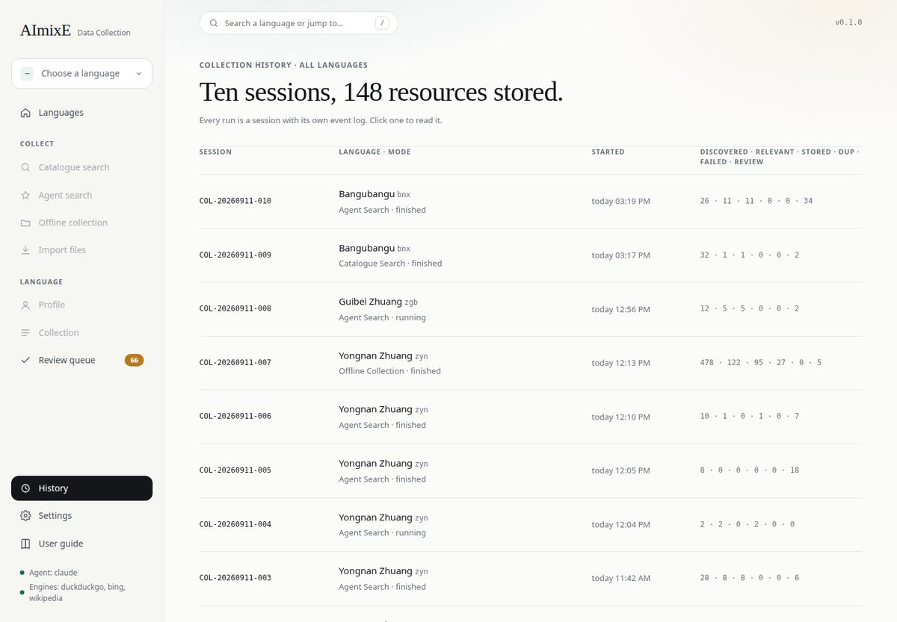
Clicking a session shows its summary and the complete event log, the same lines as aimixe collect history <id>.
Settings and Catalogues
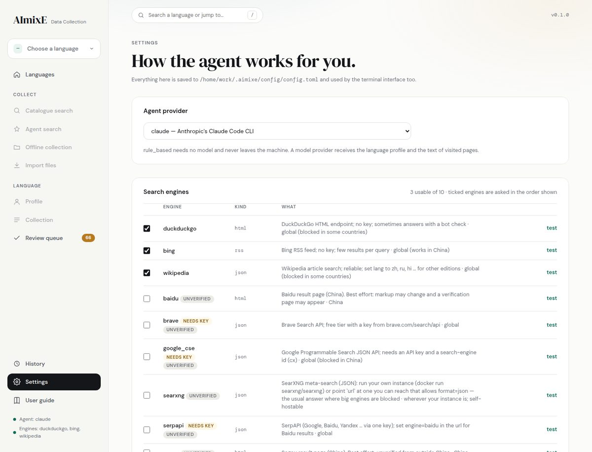
- Agent provider: the same list as the terminal; the choice is saved immediately.
- Search engines: tick the engines to use, in the order shown, and Save selection. test runs one query and prints the hits. Engines that need a key are tagged; the key goes in config.toml or the environment. Add an engine unfolds a form with the same fields as
search add. - Catalogues summarises the providers; Manage and add catalogues opens the full page.
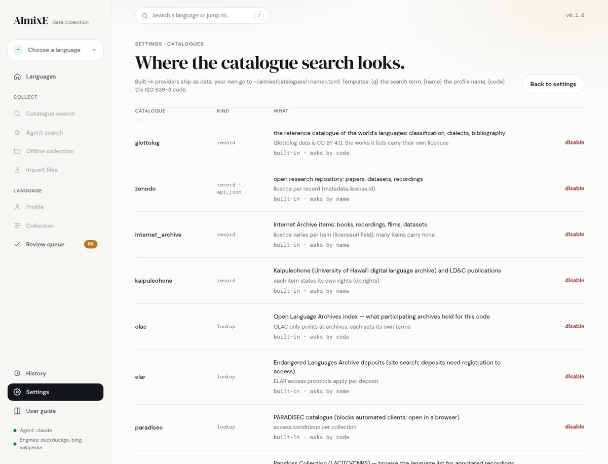
Shortcuts and addresses
Every page has an address you can bookmark or open from the terminal: #home, #find, #review, #history, #settings, #catalogues, and with a language #profile:zyn, #catalogue:zyn, #agent:zyn, #offline:zyn, #import:zyn, #collection:zyn, #review:zyn. Example: http://127.0.0.1:8765/#review:zyn.
Part 4 · Reference: relevance scoring
Every candidate, wherever it comes from, gets a score from 0 to 100 built from signals in its title, description, metadata and, once downloaded, its text. Each signal counts once and carries a reason you see next to the result.
| Signal | Weight | Notes |
|---|---|---|
| Asserted by you (import) | 100 | Imported files are yours; they are confirmed. |
| ISO 639-3 code | 70 | The code as a word or in metadata. |
| Exact language name | 70 | Reduced to half when the name is shared by many languages ("Zhuang", "Naga") or is an ordinary word ("Even", "Bench") without language context. |
| Alternative name | 55 | |
| Metadata says this language | 50 | A catalogue record whose language field is this code. |
| Exonym · variety | 50 | Names from the profile. |
| Known publication · translation | 45 · 40 | Titles recorded in the profile. |
| Document contents | 30 | The extracted text mentions the language. |
| Community terms | 25 | |
| Catalogue classification | 20 | Halved: a classification is a hint, not proof. |
| Place · parent grouping | 15 | |
| Family · script | 8 | |
| Country or region | 5 | On purpose tiny: a country is not a language. |
A name that appears only as an author's surname ("Zhuang, Owada & Wang 2015") is not counted. Catalogue entries of purely non-linguistic types are scored down.
| Band | Score | What happens |
|---|---|---|
| Very high · High | 70 to 100 | Confirmed: stored and counted for the language. |
| Possible | 30 to 69 | Stored, but waits in the review queue until you accept or reject it. |
| Weak · Unrelated | 0 to 29 | Recorded in the session, not downloaded (online) or rejected (offline). |
The two thresholds are confirmed_at and review_at under [relevance] in config.toml. The online minimum for downloading is min_download_score under [online], and you can change it per search.
Profile fields
Twenty-six fields in five sections. Every value carries its provenance: source type (bundled tables, user, catalogue, agent), source, confidence, year, note, and whether it is accepted, proposed or rejected. Sources that disagree are kept side by side and the field is flagged "sources disagree" until you settle it.
| Section · field | How it is asked |
|---|---|
| Names and Classification (identity) | |
| Family | Free text, e.g. Sino-Tibetan. |
| Alternative names | Comma-separated list. |
| Exonyms | Names used by outsiders, comma-separated. |
| Parent language/group | A name plus a type: parent language, dialect group, macrolanguage, subgroup, grouping. |
| Scripts | Script names or ISO 15924 codes (Latin, Myanmar, Deva); resolved against the bundled script table. |
| Notes | Free text. |
| Orthography and Location (orthography_location) | |
| Orthography status | Pick a suggested value or describe it. |
| Literacy | Free text. |
| Varieties | Dialects and varieties, comma-separated. Glottolog's dialect names are proposed when you ask for values. |
| Region | Free text. |
| Places | One per line: name, type (village, district…), region, country. |
| Other languages | Tagged list: Hindi (lingua franca), Assamese: regional. |
| Existing Resources (resources) | |
| Resource summary | Free text. |
| Written materials · Recordings · Linguistic studies · Digital resources | A state (yes, no, unknown, limited, reported, historical) plus an optional detail. |
| Speaker estimate | A number, an approximation (~8500) or a range (8000-9000). |
| Speaker and Community Information (community_status) | |
| Speaker estimate basis | Type (census, fieldwork…), year and source. |
| Transmission | Whether children learn it: a suggested value or your own words. |
| Age spread | Yes, no or unknown for children, young adults, adults, elderly, plus a note. |
| Domains of use | List. |
| Displacement | A suggested value or your own words. |
| Community information | Free text plus lists of organisations and contacts. |
| Translation and Publication (translation_publication) | |
| Translations · Publications | no, unknown, or entries one per line: kind | title | date | organisation | url. |
Where things are stored
~/.aimixe/
├── config/config.toml every setting; created with defaults on first run
├── catalogues/<name>.toml catalogue providers you added
├── search-engines/<name>.toml search engines you added
├── database/aimixe.db SQLite: languages, profiles, resources, sources, sessions, review queue
├── languages/<id>/
│ ├── language.json the profile with per-value provenance
│ ├── resources/<category>/ originals, write-once, read-only (copy and move modes)
│ ├── extracted/<n>-<hash>/ text.txt, metadata.json, pages.json derived from each resource
│ ├── metadata/ manifests/ catalogue records, lookup-link manifests
├── cache/ temp/ logs/ logs/collect.jsonl is an append-only event logStored originals are named <hash prefix>-<original name> and made read-only. A byte-identical file is stored once, however many times it is found; each finding adds a source record. The database is the authoritative index; language.json is written from it so you can read a profile without the tool. Back up the whole folder to keep everything.
config.toml
Created at ~/.aimixe/config/config.toml on first run with every default shown. Edit it with any text editor; the tool reads it at start.
[general]
uncertain_below = 0.6 # profile values with lower confidence are asked again
storage_mode = "copy" # copy | move | reference
[relevance]
confirmed_at = 70
review_at = 30
[agent]
provider = "rule_based" # rule_based | claude | codex | gemini | agy | qwen | ollama | llm | custom
search_backends = ["duckduckgo", "bing", "wikipedia"]
max_queries = 16
hits_per_query = 8
max_pages = 40
max_depth = 2
per_host = 6
max_rounds = 2
max_files = 40
# [agent.cli]
# command = "my_tool --quiet {prompt}" # your own model command; {prompt} or stdin
# [agent.search_keys]
# brave = "…" # keys for engines that need one
[online]
max_download_mb = 500
max_results_per_provider = 25
max_files_per_record = 25
min_download_score = 50
parallel_downloads = 3
timeout = 30
disabled_catalogues = []
[extraction]
enabled = true
max_text_mb = 50
[archives]
ingest_members = false # true: every member of a zip/tar becomes a resource
max_members = 200
[dedup]
fuzzy = true # near-duplicate text detection
threshold = 0.85
[scan]
exclude_dirs = [".git", "node_modules", "__pycache__", ".cache", ".venv", "venv"]
max_file_size_mb = 4096
content = true # look inside files during offline scans
content_max_mb = 20Search engines, China, keys
Engines are data, not code. The built-in ones live in the package; yours go in ~/.aimixe/search-engines/. Three kinds: json (an API; dotted paths pick url, title and snippet from the answer), rss (a feed of results) and html (a results page; a regular expression picks out the links, best effort).
| Engine | Key | Where it works |
|---|---|---|
| duckduckgo | no | Global; blocked in some countries; sometimes answers with a bot-check page, which the run reports and skips. |
| bing | no | Global, including China. Few results per query. |
| wikipedia | no | Global except where blocked. Set lang to zh, ru, hi… for another edition. |
| baidu · sogou | no | China. Result-page scrapers, unverified from outside China; a verification page may appear. |
| searxng | no | Wherever your instance is. Run your own (docker run searxng/searxng) and point url at it. The usual answer where the big engines are blocked. |
| brave · google_cse · serpapi · yandex_xml | yes | Keyed APIs. SerpAPI can return Baidu results with engine=baidu in the URL. |
In China the practical choice is aimixe collect search use bing baidu, or a SearXNG instance you can reach, or SerpAPI with a key. Test before a long run: aimixe collect search test baidu "壮语".
Keys: in config.toml under [agent.search_keys] (brave = "…", google_cse = "…" plus google_cse_cx = "…", serpapi = "…", yandex_xml = "…") or as environment variables AIMIXE_SEARCH_KEY_BRAVE and so on. An engine whose key is missing is skipped at run time and says why in the engine list.
A minimal engine file:
# ~/.aimixe/search-engines/my_searxng.toml
name = "my_searxng"
kind = "json"
url = "https://searx.example.org/search?q={q}&format=json"
items = "results"
what = "our SearXNG"
[fields]
url = "url"
title = "title"
snippet = "content"Agent providers
The agent has two parts: the search and page-reading machinery (always the same, always local) and a provider that classifies pages, refines queries and extracts facts.
| Provider | What it is | Data leaves the machine? |
|---|---|---|
| rule_based | The default. Rules only, no model. Queries from the profile fields, facts by pattern. | No (only the web searches themselves). |
| claude · codex · gemini · agy · qwen · llm | Command-line model tools already on your PATH. Their answers are combined with the rule-based baseline; if the tool fails, the run carries on rule-based. | Yes: the language profile and the text of visited pages are sent to that tool. |
| ollama | A local model through Ollama; set the model name to one you have pulled. | No. |
| custom | Any command under [agent.cli]; {prompt} in the command or the prompt on stdin. | Depends on the command. |
Whatever the provider, facts it proposes go to the review queue with the quote that supports them, and names it learns during a run are used for later queries but never written to the profile by themselves.
Catalogue providers
| Provider | Kind | What you get |
|---|---|---|
| glottolog | record | The languoid record: classification, dialect names, glottocode. Facts are proposed to the review queue. |
| zenodo | record | Papers, datasets and recordings with files to download and a licence. |
| internet_archive | record | Books, recordings, films and datasets. |
| kaipuleohone | record | The University of Hawaiʻi language archive (a DSpace repository). Another DSpace repository can be added with the same class and a different base URL. |
| olac · elar · paradisec · pangloss | lookup | A URL to open in a browser. These sites have no machine-readable search the tool may use, so nothing is fetched; the links are saved in a manifest with the session. |
Your own providers are TOML files of kind lookup, api_json or html_links; aimixe collect catalogue add asks the questions. Every download records the catalogue, the record URL, the licence and the date in the resource's provenance.
Troubleshooting
| What you see | What it means · what to do |
|---|---|
| "DuckDuckGo answered with a bot check" | The engine refused automated queries for a while. The other engines carry on. Use search use bing wikipedia or add a SearXNG instance. |
| "No usable search engine" | Every enabled engine needs a key you have not set, or none is enabled. search list shows why; search use … fixes it. |
| "claude is not available; the rule-based agent is used" | The chosen model tool is not on PATH. Install it, or pick rule_based in Settings. Runs still work. |
| Catalogue search takes a minute | Zenodo and Internet Archive answer slowly for broad names; the time per provider is printed. Untick providers you do not need. |
| A download shows 0 B/s for a long time | The server is slow or stalled; the per-file timeout ([online] timeout) ends it and the item is recorded as failed. Nothing else is affected. |
| Many "review" outcomes, few "stored" | The profile has few names, so scores stay in the middle band. Add alternative names and varieties, or accept the proposals from Propose values, and search again. |
| Nothing found offline although the files are there | The file names do not contain any profile term. Turn on "look inside files", or add the names people actually use to the profile. |
| "Cannot start the interface on 127.0.0.1:8765" | The port is in use (another ui running?). Use --port. The terminal's w picks the next free port by itself. |
| A stored file is read-only | By design: originals under resources/ are write-once. Work on a copy. |
| Scanned PDFs yield no text | The built-in extractor handles plainly encoded PDFs. Install pdftotext (poppler); it is used automatically and recorded in the provenance. |
| Strange characters on Windows | Run in Windows Terminal or PowerShell; the launcher sets UTF-8. Older cmd windows may need chcp 65001. |
Wrong language accepted with --yes | --yes takes the best candidate. Give the ISO code instead of a name to be exact. |
Logs: ~/.aimixe/logs/collect.jsonl holds one JSON line per event; aimixe collect history <id> shows a session's events in order. Both are the first thing to look at when a run did something unexpected.
That is every screen, key and command. The tool never changes or deletes what it stores, so the worst outcome of trying something is an item in the review queue.